Three raylib programs in one package, ros/hud/aav_hud, each also its own ROS node:
| Program | Node | Screen | Shows |
|---|---|---|---|
| The HUD | hud |
the small ~7" touchscreen | speed, GO / STOP, the e-stop button, the camera, the topics |
| The map window | map |
the big ~15" monitor | Nav2's map over Ottawa's streets, the plan, place search |
| The debug HUD | debug_hud |
a laptop, or the Orin's screen | the lidar's cubes in 3D, where each localizer puts the car, every sensor |
Decided 11 October (Ben): the HUD is Rust, raylib and rclrs. Its first screen runs since 15 October. It replaced the 2025-26 team's Flutter app (Q29), which is now archived.
Two screens (Ben, 15 Oct): a small ~7" touchscreen is the instrument cluster (the HUD), and a big ~15" monitor shows the map: the map window, a second program. Each opens full screen on its own monitor at boot: The two screens.
The HUD in Rust (raylib)
ros/hud/aav_hud: one window, which is also the ROS node hud.

| Panel | Shows |
|---|---|
| Top strip | mode, armed, gear (D/R/P), e-stop on/off, battery, faults |
| Speed | km/h, big. Grey with "OLD" when /vehicle/status stops |
| GO / STOP (24 Oct) | may the car move? A colour, an icon, a word, the one main reason: below |
| Controls | steering (left of centre = left), throttle, brake: one row each |
| Camera | the picture (rgb8, bgr8, rgba8, bgra8, mono8); a STOP SIGN banner over it; a big orange SIMULATED / BENCH / REPLAY band along its bottom when /system/source says any data isn't the real car's; the sensor watchdog's banner (15 Oct): red STOP: gps STALE (...) while it holds Nav2, amber for a warning, red SENSOR WATCHDOG SILENT if it stops talking (twist_mux then holds Nav2 for its silence) (simulation) |
| E-STOP | the button: /safety/estop true 5 times, 0.1 s apart. Never false. Says whether anything heard it |
| (nothing on screen) | the heartbeat, /hud/heartbeat: below |
| Topics | every topic it listens to: OK, STALE (quiet for 1 s) or NEVER, and how long ago; a REAL / SIM / BENCH / REPLAY tag where /system/source names it |
| GPS | is there GPS data? NO GPS DATA, GPS SILENT, or the fix: NO FIX, 2D, 3D, DGPS, RTK FLOAT, RTK FIXED. Then lat, lon, accuracy, age |
May the car move? (the GO / STOP panel)
For the safety drivers (Ben, 24 Oct: "fix the hud?"). Under the speed, the whole panel in one colour:
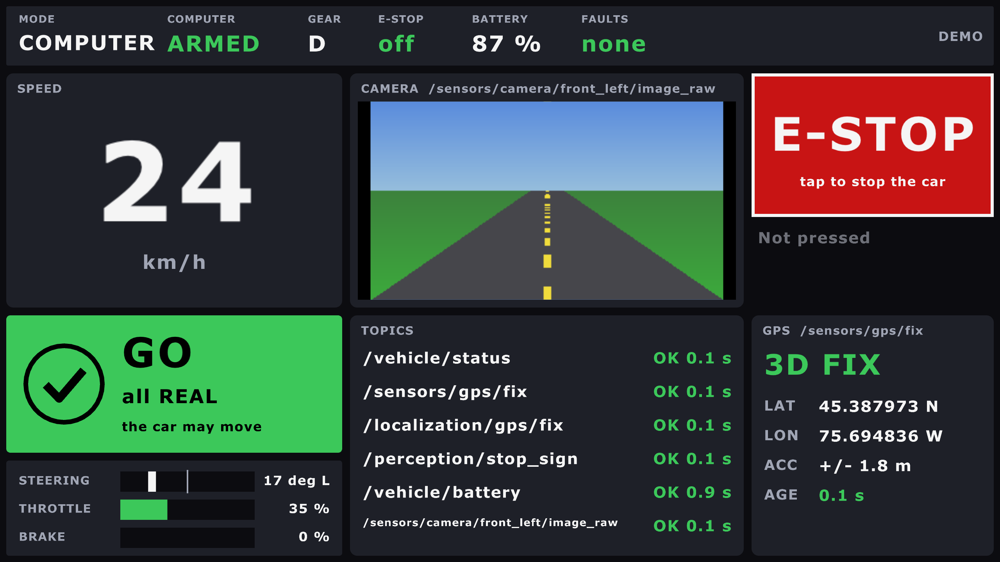
| STOP: a simulated camera on the car's network (latched) | AUTO STOP: the GPS went quiet |
|---|---|
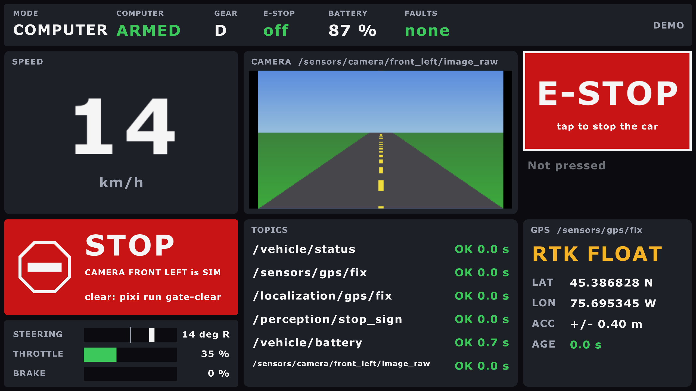 |
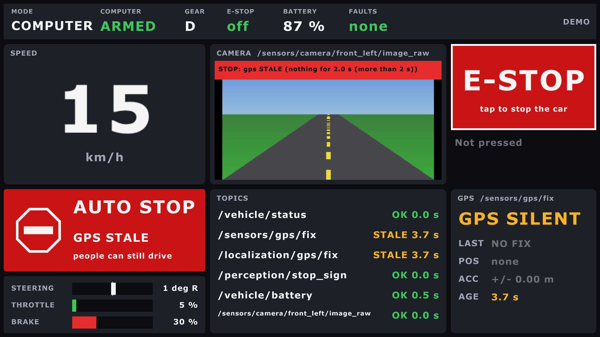 |
Taken with pixi run hud-demo --screenshot FILE --screenshot-after 50 (STOP) and 37.5
(AUTO STOP): the demo goes round GO, WAIT, AUTO STOP and STOP every minute.
+-------------------------------+ +-------------------------------+
| (tick) GO | | (stop STOP |
| all REAL | | sign) GPS is SIM |
| the car may move | | clear: pixi run |
+-------------------------------+ | gate-clear |
green +-------------------------------+
red| Colour and icon | Word | Means |
|---|---|---|
| green, a tick | GO | the gate is open; nothing holds the drivers |
| amber, a pause sign | WAIT | the gate is shut for now; it opens by itself |
| red, a stop sign | STOP | nothing reaches the car (people's commands too), until fixed or cleared |
| red, a stop sign | AUTO STOP | Nav2 and the AI slot are held; people can still drive |
| grey, a question mark | NO GATE | no output mux heard: nothing reaches the car |
The one main reason, the first that applies:
| # | Who says no | Reason on screen | Small line |
|---|---|---|---|
| 1 | the car's e-stop (/vehicle/status) |
E-STOP ON | clear: pixi run estop-clear |
| 2 | the output mux, latched (sources and targets) | GPS is SIM, 2 sources: IMU, sensor mux wants SIM... | clear: pixi run gate-clear |
| 3 | the output mux, silent 2 s | gate silent | nothing reaches the car |
| 4 | the sensor watchdog, silent | watchdog silent | people can still drive |
| 5 | the sensor watchdog's lock: its first input that stops | GPS STALE, HUD LOST, WHEELS DISAGREE... | people can still drive; latched ones: clear: pixi run watchdog-clear |
| 6 | the output mux, waiting | settling, sensor mux quiet, unsure: GPS... | opens by itself |
| 7 | nothing heard from the output mux | no output mux heard | nothing reaches the car |
| - | none of these | all REAL (or all SIM, in a simulator) | the car may move |
- The logic:
hud-coregate(no ROS), with tests. It reads the two one-line states,/safety/output_mux/stateand/safety/sensor_watchdog/state. A line it doesn't know shows as it is, never as GO. - The camera's red watchdog banner stays: it has every input's detail.
--demowalks through GO, WAIT, AUTO STOP (the GPS silent) and STOP (a SIM camera).
Run it
pixi run hud-demo # pretend data: no ROS, no car, any Mac
pixi run build && pixi run hud # the real node (ros2 launch aav_hud hud.launch.py)
pixi run hud fullscreen:=true # full screen; F11 switches too
pixi run hud fullscreen:=true monitor:=HDMI-2 # on that monitor, by name or numberWithout Pixi: cargo run -p hud-app --no-default-features -- --demo, in
ros/hud/aav_hud. The first build compiles raylib (cmake, about a minute).
How it's built
| Part | What it does |
|---|---|
crates/hud-core |
the logic, no ROS, no raylib: state, GPS kinds, OK/STALE/NEVER, the e-stop burst. cargo test -p hud-core (in tools/test.sh) |
crates/hud-app |
the window (raylib, main thread) and the node (rclrs, its own thread, news over a channel). --demo swaps the node for pretend data |
config/hud.yaml |
every topic name, the only place they're written. Rename one there, or --ros-args -p gps_topic:=/x |
- The GPS panel reads
/sensors/gps/fix, the receiver itself, not/localization/gps/fix: it answers "does the GPS work?". navsat_transform marks every/localization/gps/fixmessage as RTK. - NavSatFix can't tell RTK float from fixed. The HUD calls it fixed at 5 cm or better.
- Not in
car.launch.py: on the car it starts at login by itself (The two screens). On Linux without X11's headers, colcon skips it with a warning. --monitor NAME|Npicks the monitor (its name exactly, or its number);--list-monitorsprints them. A missing monitor is an error, never a guess.
The heartbeat
The safety drivers rely on this screen, so the sensor watchdog must know it's alive (23 Oct, PLAN T9.8).
window draws a frame --> count + 1
every 10 ms, the e-stop's timer (ROS thread):
0.1 s since the last beat, and the count rose? --> /hud/heartbeat = count (10 Hz)
sensor_watchdog, input hud: quiet 1 s, or the count stuck 1 s --> STOP: Nav2 and the AI slot| What fails | What happens |
|---|---|
| The window freezes | the count stops rising: no more beats |
| The ROS thread freezes | the timer stops: no beats, and no e-stop either. The watchdog stops Nav2 |
| The program dies | no beats. systemd restarts it in 5 s; Nav2 stays held (latched, below) |
| The HUD never started | the watchdog says hud NEVER: Nav2 never drives |
Latched (Ben, 24 Oct: a HUD that keeps crashing holds Nav2 until a person clears it):
first beat ──► 5 s grace ──────────────► running
one dropout in the grace: forgiven any dropout: hud LOST, latched
(held only while it lasts) (held even once it beats again)
a person checks the screen ──► pixi run watchdog-clear ──► Nav2 may drive| Case | What happens |
|---|---|
| A slow first frame, within 5 s of the first beat | held while it lasts, then drives by itself (once) |
| A crash, a freeze or a closed window after that | hud LOST: held, even once systemd restarts it |
| A HUD that keeps crashing while it starts | the second dropout latches |
pixi run watchdog-clear |
Nav2 drives again, if the HUD beats; the grace starts again |
| The watchdog itself stalled (a busy computer) | not the HUD's fault: nothing latches |
The rule is latch: true on the hud input (sensor_watchdog.yaml, latch_grace: 5.0),
in aav_safety watchdog.py, with tests. The HUD shows it: AUTO STOP, HUD LOST.
| Profile | Watched? |
|---|---|
| Car | yes: car.launch.py watch_hud:=true, the default. watch_hud:=false for a session with no HUD screen |
| Gazebo | with hud:=true (the window), or watch_hud:=true (something else beats) |
| Bench, turtle, CARLA | no: no HUD window there |
- People, the joystick and the e-stop are never held by it: only Nav2 and the AI slot.
- The e-stop button doesn't depend on it. It's the same timer, so a beat also proves the e-stop's sender runs.
- The logic:
hud-coreheartbeat(no ROS). The watchdog's side:kind: heartbeatinaav_safety'ssensor_watchdog.yaml.
Tested (15 October, a Mac)
| What | Result |
|---|---|
--demo, in a window and full screen |
draws; screenshots checked |
The node, with ros2 topic pub and image_publisher (private domain) |
speed, faults, RTK FIXED, 2D FIX, STOP SIGN and the camera picture shown |
Next to bench mode (bench.launch.py nav:=false, private domain) |
every bench topic OK: status, GPS 3D fix, battery 100 %, the bench camera. /perception/stop_sign NEVER (perception is off there) |
One press, through the real node, to another node (cargo test) |
exactly 5 trues, no false, each "sent to 1 node" |
Ctrl-C to ros2 launch |
the window closes, "finished cleanly" |
| A click on the window's button | not tested: macOS blocks clicks from scripts |
| The sensor watchdog's banner (15 Oct) | its logic: cargo test (hud-core watchdog, state), shared with the map window. Not seen on screen yet |
| The SIMULATED / BENCH / REPLAY banner (15 Oct) | its logic: cargo test (hud-core origin, and the message's numbers in hud-app). Not seen on screen yet: the window couldn't open from that session |
The heartbeat, through the real node (23 Oct, cargo test) |
none before the first frame; 15-21 beats in 2 s of drawing, each count higher; none once drawing stops, and the e-stop's 5 trues still go out |
| The heartbeat, the real window and the watchdog (23 Oct, private domain) | 9.3 beats a second; hud NEVER before it opened, OK while it ran; frozen (SIGSTOP) or closed: hud STALE and the lock on within about 1 s; thawed: OK again |
The heartbeat in Gazebo (23 Oct, sim-check --faults, hud stop, twice) |
the check beats in the window's place; when it stops, Nav2's car stands still 2.5 s later |
The GO / STOP panel's logic (24 Oct, cargo test, hud-core gate, state) |
every state and reason above; the output mux's lines as its own tests have them, and one from the live output mux next to the turtle (latched by a node announcing a REAL GPS: "GPS is REAL"; cleared by the service) |
The output mux's line through the real node (24 Oct, cargo test, hud-app) |
published by another node, it reaches the screen |
| The GO / STOP panel on screen (24 Oct) | ✅ seen: Ben ran pixi run hud-demo --screenshot docs/img/hud-gate.png (GO, green, "all REAL"; the picture above). STOP and AUTO STOP seen too (24 Oct, the pictures above) |
The HUD latch (24 Oct, aav_safety tests) |
a start-up dropout forgiven; any later one latched until cleared; a crash loop latches the second time; a stalled watchdog latches nothing |
The HUD latch in Gazebo (24 Oct, sim-check --faults, hud stop) |
stood still 2.4 s after the beats stopped: "hud LOST"; beating again, still held 5 s later; cleared, Nav2 drove again. 25 of 25 faults pass |
What it shows with each backend
The HUD reads topics, so it works next to anything that publishes them. Start the backend,
then pixi run hud in another terminal (the same ROS_DOMAIN_ID).
With Gazebo, one command does both: pixi run sim world:=test_lot hud:=true.
| HUD panel | Turtle (pixi run turtle) |
Gazebo (pixi run sim world:=road) |
Bench (pixi run bench) |
Car |
|---|---|---|---|---|
| Speed, steering, mode, armed | ✅ from the turtle's motion (15 Oct) | ✅ 50 Hz, from Gazebo's wheels | ✅ | the backend's /vehicle/status |
| GPS panel | NEVER: no GPS | ✅ 3D fix, about 5 Hz | ✅ | the ZED-F9R, once it runs |
| Camera | NEVER: no camera | ✅ road world, about 9 Hz | ✅ the drawn road | the camera Pis |
| Stop sign | NEVER | with perception:=true (pixi run -e ml sim ...) |
with --perception |
YOLO |
| Battery | NEVER | NEVER: not simulated | ✅ | the battery monitor |
Orange banner (/system/source, 15 Oct) |
SIMULATED | SIMULATED | BENCH | none: spine_bridge and legacy_uart_bridge say REAL |
Checked on 15 Oct by listening to each topic while the backend drove a scripted goal (the window itself couldn't open from that session). NEVER on a panel is the honest answer: nothing publishes that topic there.
The map window (big screen)
ros/hud/aav_hud, binary map: its own window, which is also the ROS node map.
Step 1 (15 October): what Nav2 already knows, drawn north up. Step 2 (15 October): an
offline street map of Ottawa under it (below). Step 3
(15 October): search for a place and send it to
Nav2.
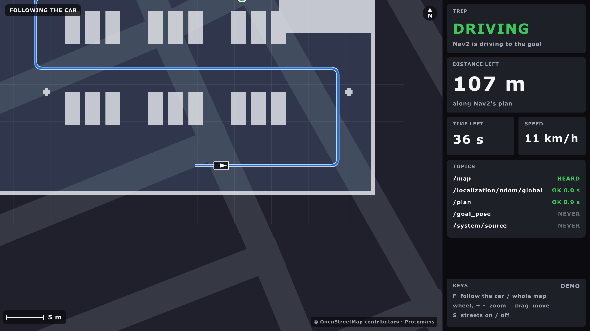
| On screen | From |
|---|---|
| The map: free light, occupied dark, unknown grey; grid lines every round number of metres | /map (latched) |
The car: its outline to scale (vehicle.yaml), with an arrow; grey when its position is old |
/localization/odom/global (map frame) |
| The plan: a blue line | /plan |
| The goal: a green dot | the plan's last point; RViz's /goal_pose until Nav2 plans for it |
| TRIP | NO GOAL, DRIVING, ARRIVED (within 1 m), WAITING FOR A PLAN, NO NEW PLAN (Nav2 stopped replanning: cancelled or failed), NO POSITION |
| DISTANCE LEFT | along the plan, from the point nearest the car |
| TIME LEFT, SPEED | distance / speed; km/h from the odometry |
| TOPICS | each topic: OK, STALE or NEVER |
| Orange band | SIMULATED / BENCH / REPLAY, as on the HUD (/system/source) |
| Watchdog banner (15 Oct) | across the bottom of the map: the sensor watchdog's verdict, as on the HUD: red STOP: ... while it holds Nav2, or SENSOR WATCHDOG SILENT; amber for a warning (/safety/sensor_watchdog/state) |
| Scale bar, N | bottom left; north is always up |
Keys
| Key | Does |
|---|---|
| / | search for a place (below) |
| F | follow the car (the start: 60 m across) / the whole map (--whole-map starts there) |
| S | the street map on / off |
| mouse wheel, + and - | zoom |
| drag | move the map (a free view; F goes back to the car) |
| F11 | full screen |
Run it
pixi run map-demo # pretend data: no ROS, no car
pixi run build && pixi run map # the real node (ros2 launch aav_hud map.launch.py)
pixi run sim world:=test_lot map:=true # Gazebo, Nav2 and the map window together
pixi run map fullscreen:=true monitor:=HDMI-1 # full screen on that monitorHow it's built
| Part | What it does |
|---|---|
crates/map-core |
the maths, no ROS, no raylib: map to screen and back, zoom, the grid's pixels, the nearest point and the distance left, the trip's status. cargo test -p map-core (in tools/test.sh) |
crates/map-app |
the window and the node, built like the HUD's. --demo, --screenshot FILE, --vehicle FILE |
config/map.yaml |
every topic name, the limits: stale_after, plan_stale_after (3 s), arrive_within (1 m), and street_map, the street map's file |
- The distance comes from
/planand the car, not from Nav2's action feedback: simpler, and it works for a goal sent from anywhere. - The car's size:
vehicle.yaml, built in, and the installed one at launch (--vehicle).
Tested (15 October, a Mac)
| What | Result |
|---|---|
cargo test (map-core 33, map-app 6: the grid message, the demo, the options) |
all pass |
--demo, with --screenshot |
the picture above |
Gazebo, world:=test_lot sim_speed:=3, headless, private domain, two Nav2 goals |
the lot, the car, the plan and the goal; SIMULATED; DRIVING, the distance and the time left counting down; both goals SUCCEEDED |
| ARRIVED on screen | only in --demo and the unit tests: each live window closed (screenshot) before the car got there |
| The watchdog banner (15 Oct) | its logic: cargo test (map-core state, hud-core watchdog), and cargo clippy. Not seen on screen: the window couldn't open from that session |
| Clicks, the wheel, dragging | not tested: macOS blocks input from scripts |
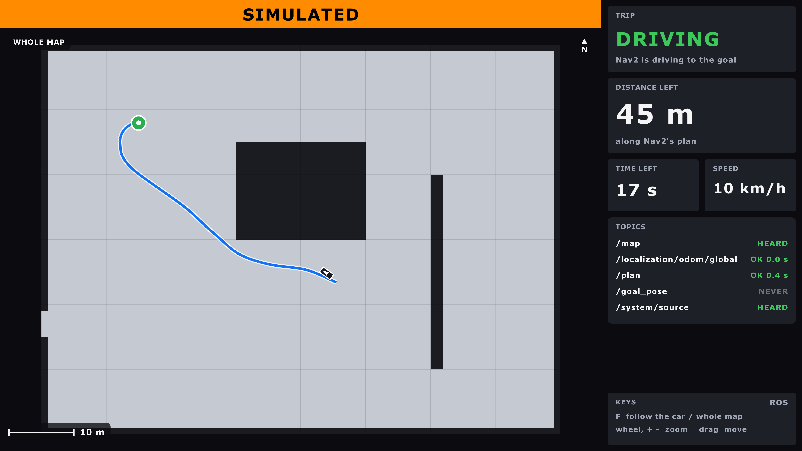
/planisn't latched: a window opened after Nav2 finished shows NO GOAL until the next goal.- Near the goal, Nav2 may plan a loop to arrive facing the right way; the distance left follows the loop.
The street map under it
OpenStreetMap's streets, water, parks and buildings, drawn under Nav2's map, so the car and its path sit on real streets. It works with no internet: the map is a file.
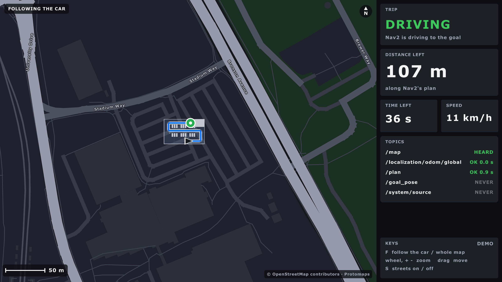
| Get it, once | |
|---|---|
pixi run get-street-map |
40 MB into maps/streets/ottawa.pmtiles (git ignores maps/) |
| What it is | Ottawa, lon -76.0 to -75.4, lat 45.2 to 45.55, zoom 0 to 15: vector tiles |
| From | Protomaps' world basemap, build 20260811 (OpenStreetMap of 11 Aug 2026) |
| How | go-pmtiles' pmtiles extract: only the tiles in the box, never the 139 GB file |
| Checked | the tool and the file, each against a pinned SHA-256 |
| Newer streets | STREET_MAP_BUILD=latest pixi run get-street-map (delete the old file first; no checksum then) |
No file: the window still runs, and says No street map: pixi run get-street-map.
Licence and credit
| Part | Licence | Asks for |
|---|---|---|
| The map data | OpenStreetMap, ODbL | "© OpenStreetMap contributors" wherever it's shown |
| The tiles (Protomaps basemap) | data ODbL, code BSD-3-Clause | nothing more; we credit "Protomaps" too |
| go-pmtiles (the download tool) | BSD-3-Clause | |
| mvt-reader, earcut, flate2 (Rust) | MIT, MIT or Apache-2.0 |
The window writes © OpenStreetMap contributors · Protomaps bottom right whenever the streets show. Don't remove it.
Why this way
| Choice | Instead of | Why |
|---|---|---|
| A Protomaps extract (vector) | downloading tile.openstreetmap.org's pictures | their tile policy forbids bulk and offline downloads |
| Vector tiles, drawn by us | ready-made pictures | our own dark colours, sharp at any zoom, 40 MB for the whole city |
| Our own PMTiles reader (150 lines) | the pmtiles crate |
it reads only through tokio (async); pmtiles2 brings brotli and zstd |
The datum from navsat.yaml |
a second copy in map.yaml |
one place: the window uses what navsat_transform uses (--navsat, from the launch file) |
Where the streets go
navsat_transform puts map (0, 0) at its datum (aav_localization/config/navsat.yaml), x
east, y north. map-core's earth does the same sums: UTM in the datum's zone, less the
datum, turned by the meridian convergence (-0.495 degrees at Carleton).
| Check (15 Oct) | Result |
|---|---|
UTM against GeographicLib (GeoConvert) |
within 1 mm (unit test) |
| Carleton (45.3835, -75.6974) on the map | ours (-109.607, -277.746) m; navsat_transform's /fromLL in the sim (-109.607, -277.746) |
| Parliament Hill (4 km north) | ours (-93.875, 3944.025) m; /fromLL the same to 1 mm |
| Without the convergence turn | 34 m off at Parliament Hill: why it's there |
The sim's datum is the placeholder near Carleton, so in Gazebo the test lot sits on campus streets that aren't really there: the streets only match the world on the car.
How it draws
| Part | Where |
|---|---|
| Lat/lon to map metres and back | map-core/src/earth.rs |
| Which tiles, which zoom | map-core/src/tiles.rs |
| Reading the file | map-core/src/pmtiles.rs |
| One tile to triangles and lines | map-core/src/streets.rs (mvt-reader, earcut) |
| What to keep, load, forget | map-core/src/tilecache.rs (160 tiles; a parent tile stands in while one loads) |
| The loader thread, the colours, the names | map-app/src/streets.rs (rlgl: one batch per colour) |
- Order: streets, then Nav2's map see-through (unknown clear, free a faint blue, occupied near-white), then the plan, the goal and the car.
- Roads by class: paths and service roads dim, residential grey, major roads (Bronson, Colonel By) brighter and wider, highways (the 417) amber. Zoomed in, roads are their real width.
- Street names from about 1.5 km across the window, along the street.
--zoom 0.12starts zoomed out (about 10 km across); the wheel goes out to 50 m a pixel.
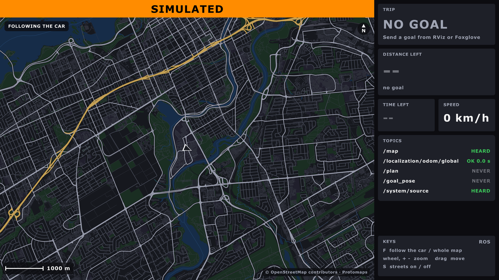
Tested (15 October, a Mac)
| What | Result |
|---|---|
cargo test (map-core 54, map-app 8) |
all pass; two tests read the real file when it's there |
--demo, near and far |
the pictures above |
Gazebo, test_lot, headless, private domain, a Nav2 goal |
the lot over the campus streets, the plan and the car; the goal SUCCEEDED |
| S, the wheel, dragging | not tested: macOS blocks input from scripts |
| On the car with a real GPS | untested |
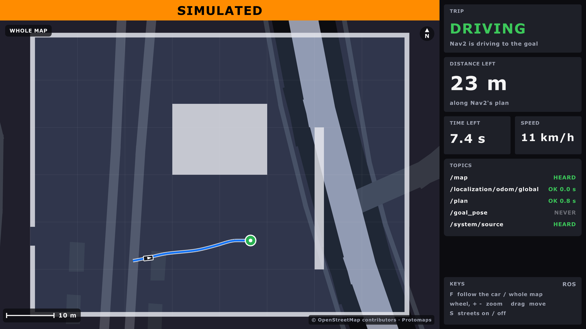
Search for a place, and drive there
Type a name or an address, pick a result, and send it to Nav2 as the goal. Two presses (DRIVE HERE, then CONFIRM), so a stray tap never moves the car.
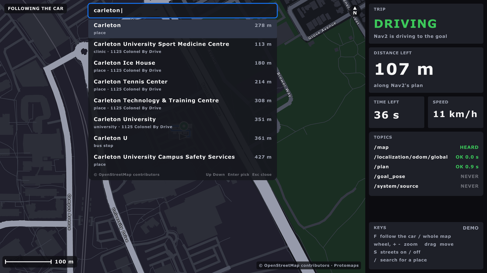
| Key | Does |
|---|---|
/ or a click on the box |
open the search box (a tap or click also opens the on-screen keyboard) |
| letters, Backspace | type (the map's own keys, F S + -, are letters while typing) |
| Up, Down, Enter, or a click | pick a result: the map centres on it, with a magenta pin |
| Enter, or a click | DRIVE HERE, then CONFIRM: send goal |
| Esc | back one step: CONFIRM to the place, the place to the list, the list closed |
The on-screen keyboard (touchscreen)
The car's screen has no keyboard. Tap the search box: a keyboard opens along the bottom. A mouse click counts as a tap, so it works the same on a Mac.
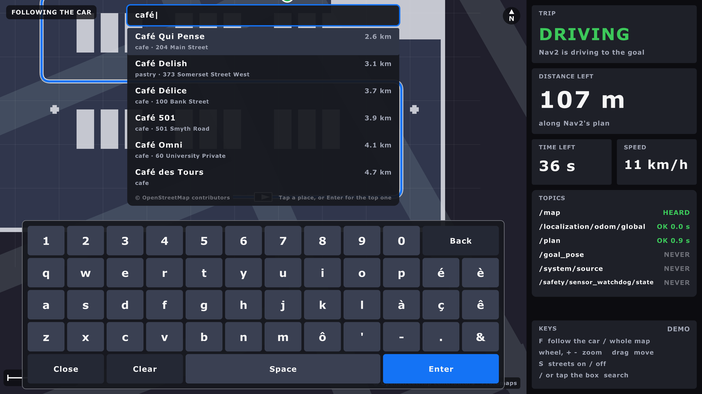
| Key | Does |
|---|---|
letters, digits, ' - . & |
type (lower case: the search ignores case) |
| é è à ç ê ô | the accents in Ottawa's French names |
| Space | a space |
| Back | remove the last letter (a whole letter, even é) |
| Clear | empty the box |
| Enter | pick the top result (the map centres on it, then DRIVE HERE) |
| Close | hide the keyboard; the results stay, tap one |
| Key size | 84 px at 1600 x 900, grows with the window, never under 60 px |
| Results | only the rows that fit above the keyboard |
| A real keyboard | works as before; / opens the box without the on-screen keyboard |
| Code | map-core/src/keyboard.rs (the keys, which one a tap hit: unit-tested), map-app/src/ui.rs (drawing) |
| Screenshot | --keyboard opens it at the start |
| Message | geometry_msgs/PoseStamped on /goal_pose (goal_topic in config/map.yaml), as RViz's "2D Goal Pose": bt_navigator starts a navigate_to_pose |
| Frame | Nav2's map frame (map), from the place's lat/lon by the same sums as navsat_transform (earth.rs) |
| Facing | from the car toward the place |
| Refused | outside Nav2's /map (Outside Nav2's map: 3.8 km away, from its edge), no /map yet, or no car position |
--demo |
no Nav2: the goal shows, and the pretend car stops |
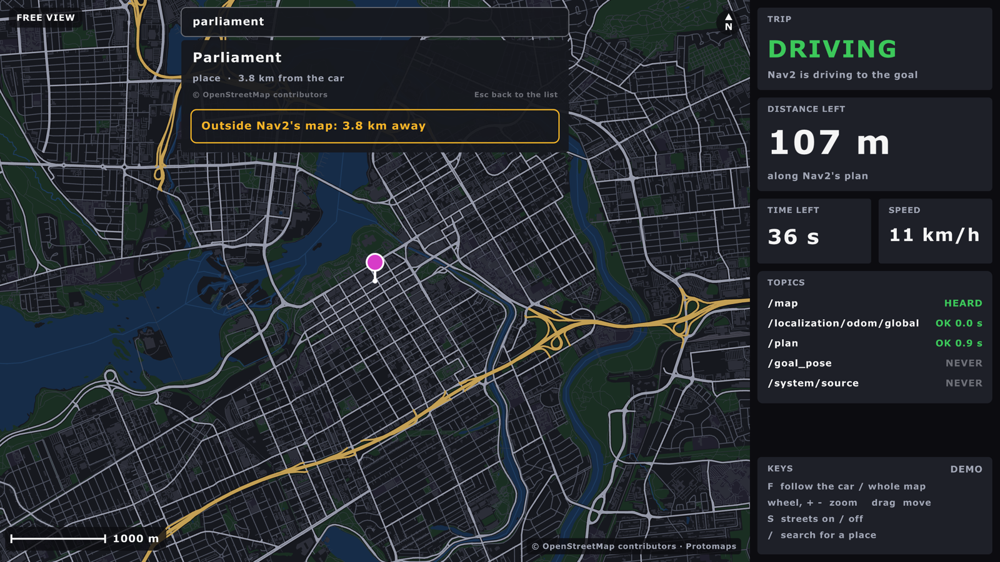
On the car, Nav2's map is only the test site, so most of Ottawa is "outside" until a bigger map (or Nav2's GPS waypoints over a road map) exists. That's the right answer, not a bug.
How the search works
| File | maps/places/ottawa.db (places in config/map.yaml, or --places FILE): pixi run get-places |
| Opened | read-only |
| Matches | a name that starts with the words (any case), an address ("580 rideau"), then names with the words inside |
| Left out | street lamps, benches, crossings, footways, service roads, link roads... (a deny-list, NOT_DESTINATIONS in places.rs: over 300 types, so a new one should show up) |
| Ranked | exact name, then starts with, then a word starts with, then inside; nearest first in each; a street's many pieces count once |
| Shows | at most 8 |
| Speed (a Mac, release build) | 0.3 to 19 ms on the real file |
| Credit | "© OpenStreetMap contributors" under the results and the place (ODbL) |
| Code | map-core/src/places.rs (search), destination.rs (the steps, the goal check), map-app/src/search.rs (keys, sending) |
| Library | rusqlite with SQLite built in (MIT; SQLite is public domain) |
Try a search from a terminal: cargo run --release -p map-core --example search -- tim hortons
(in ros/hud/aav_hud, with PLACES= the file's path).
For tests and screenshots
| Option | Does |
|---|---|
--search TEXT |
starts with TEXT typed |
--pick N |
with --search: picks result N |
--keyboard |
opens the box with the on-screen keyboard showing |
--send-goal TEXT |
once /map and the car are known: sends the first result inside Nav2's map, and says so on the terminal |
Tested (15 October, a Mac)
| What | Result |
|---|---|
cargo test (map-core 74 with the real file, map-app 11) |
all pass |
Gazebo test_lot, headless, private domain: --send-goal "university drive" |
sent x 59.27, y 11.90 m; bt_navigator: "Begin navigating from current location (0.06, 0.09) to (59.27, 11.90)"; then "Goal succeeded" |
The same, --send-goal "carleton university" |
nothing sent: every result "Outside Nav2's map" (109 m to 700 m away) |
| Typing, clicks, Up/Down, DRIVE HERE and CONFIRM by hand | not tested: macOS blocks input from scripts. The steps are unit-tested in destination.rs |
| On the car's touchscreen | untested: the on-screen keyboard (16 Oct) is ready; taps by hand not tried yet |
| The on-screen keyboard (16 Oct) | cargo test (map-core keyboard: key at a point, scaling, editing, Back on é); --demo --keyboard screenshot above. Taps by hand: not tested (macOS blocks input from scripts) |
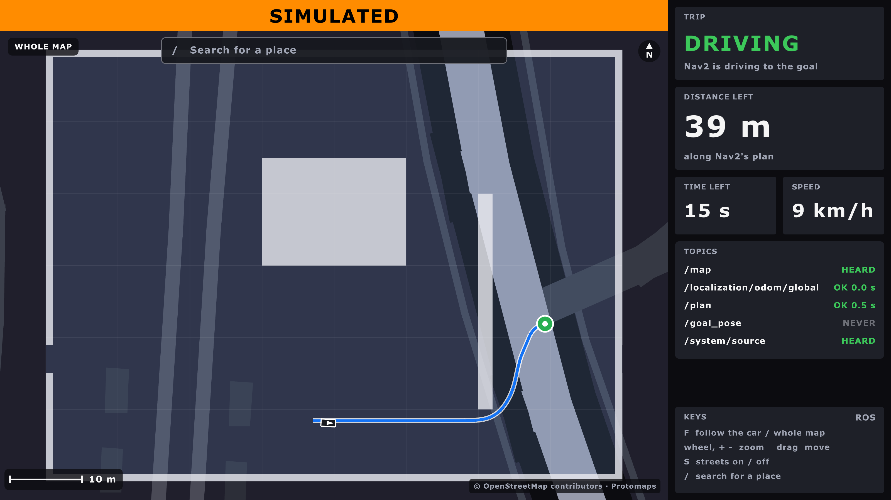
The sim's datum is the placeholder near Carleton, so in Gazebo "University Drive" lands inside the test lot. On the car, the datum is the real test site.
The debug HUD
ros/hud/aav_hud, binary debug_hud: what the car sees and what it thinks, in
one window. It only listens: it never touches an actuator. Ben, 29 Oct: "the low level
hud ... should connect directly to the ros node at the sensor". Design:
2026-10-29_debug-hud.md.
What it shows
| On screen | From | Frame |
|---|---|---|
| Cubes (20 cm), coloured by height: dark ground, then teal to pale | /sensors/lidar/points |
lidar_link -> base_link -> odom |
The car: a blue box to scale (vehicle.yaml) |
/localization/odom/local (EKF local) |
odom |
| EKF global (green), AMCL (orange), truth (white, sim): an outline, an arrow, a pole | their topics | map, through map -> odom |
| Nav2's plan (yellow), the car's trail (grey) | /plan; EKF local |
map; odom |
| Legend, top left | each localizer's distance from EKF local, in metres | - |
| Panel: IMU, GPS, lidar, wheels, wheel odom, vehicle, each estimate, map -> odom, tracker | each topic: OK, STALE or NEVER, and what it said | - |
It publishes nothing. Its one call: keys 1-4 ask aav_track's parameter service for another tracker, in the simulator only (the design's D3: never an actuator).
How the cubes are placed
cloud (stamp t) --/tf_static--> base_link --EKF local's pose AT t--> odom --> 20 cm cubes| Rule | Why |
|---|---|
| The pose at the cloud's own stamp, interpolated from the last second of poses | the cloud arrives late: at 3 m/s, 50 ms off moves walls 15 cm |
| Clouds go through a newest-only slot to their own thread, never the shared queue | a slow window shows the newest scan, never a backlog |
| Stamps are only compared with stamps | Gazebo stamps sim time; the window runs on wall time |
Over max_cubes (20,000), the nearest stay; the panel says how many were cut |
a full VLP-16 at 100 m makes more |
| Heights are above base_link; the VLP-16's 0.1 s sweep is ignored | the EKF is 2D; Gazebo's lidar has no sweep |
Keys
| Key | Does |
|---|---|
| drag | turn the view round the car, tilt it |
| right-drag (or shift-drag) | move (leaves the car: a FREE view) |
| wheel | zoom |
| C | CHASE (behind the car) / FOLLOW (fixed angle) / FREE |
| R | back to CHASE |
| 1 2 3 4 | swap the trial tracker: pure pursuit, Stanley, LQR, MPC. Sim only: refused unless /system/source says SIM, and the track node refuses unless live_swap is on (sim.launch.py). The answer shows under TRACKER |
| F11 | full screen |
Run it
pixi run debugdemo # Gazebo, RViz, the HUD, the map window and the debug HUD
pixi run debug-hud-demo # pretend data: no ROS (a walled lot, a ray-cast lidar)
pixi run build && pixi run debug-hud # the node alone, beside a running simdebugdemo is demo with amcl:=true tracker:=pure_pursuit reversing:=false, so AMCL
and the trial tracker have something to show. Swap the tracker live with keys 1-4, or
from a terminal: ros2 param set /track tracker lqr (sim only, both ways).
How it's built
| Part | What it does |
|---|---|
crates/debug-core |
the maths, no ROS, no raylib: the pose buffer, the frames, the cubes, the camera. cargo test -p debug-core |
crates/debug-app |
the window and the node; the cubes drawn instanced (one mesh, one draw per height band) |
config/debug_hud.yaml |
every topic name, the frames, cube_size, max_cubes, pose_window, stale_after |
| PointCloud2 reader | aav_radar_clusters' own (radar-clustering), shared |
On the car: not yet from a Mac over WiFi (about 9 MB/s of reliable lidar); on the Orin's own screen.
Tested (29 October, a Mac)
| What | Result |
|---|---|
cargo test: debug-core 38, debug-app 11 (with ROS: a cloud placed by the pose at its stamp, map -> odom, a swap's answer, through the real node) |
all pass |
live_sim against headless Gazebo, test lot, amcl:=true tracker:=pure_pursuit, driving a Nav2 goal |
10 scans a second, ~6,000-7,000 cubes from ~16,000-19,000 points, none cut; every panel row OK; EKF global 0.02 m, truth 0.24 m, AMCL 0.70 m from EKF local; key 3's swap to lqr accepted mid-path, which then drove 9 mm off the path |
The window itself, pixi run debugdemo, the 20,000-cube drawing test |
untested: the Mac's screen was locked all night, and no window can open then |
The Flutter app (2025-26): archived
| What it was | the 2025-26 team's touchscreen app (Flutter) and its back end, hud_server (a ROS node with Flask), ported to our topics on 10-11 Oct |
| Where it is now | archive/2026-27-flutter-hud/: the app, the back end and their scripts. Nothing builds, tests or starts it |
| Why | Q29: the raylib HUD replaced it (Ben, 15 Oct); archived on 25 Oct (Ben) |
| What stayed | its place database, ottawa.db: the map window's search reads it (below) |
GPS routes it used to send now come from street_router and the language tools
(Routes).
The place database
The map window's place search reads ottawa.db:
51 MB of SQLite, 606,628 named places around Ottawa. It's too big for git, so a task
downloads it:
pixi run get-places # into maps/places/ottawa.db| From | the 2025-26 team's public repo, AAV-2025-2026/User-Interface, at ea5adc3: the last commit that changed it |
| Checked | by its SHA-256, so a changed file is refused |
| Data | from OpenStreetMap: © OpenStreetMap contributors, under the ODbL. The map window shows that credit |
Foxglove works as the operator's screen too: foxglove_bridge, on port 8765, shows
speed, the map, paths and costmaps (Watch from a laptop).